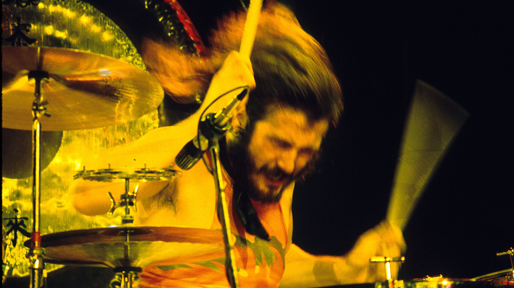
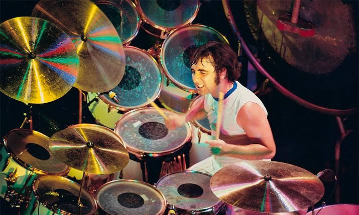
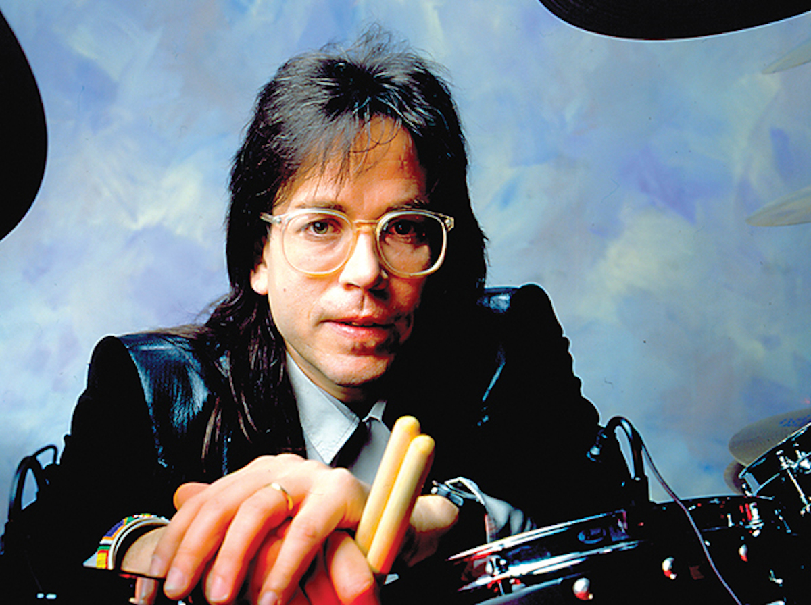
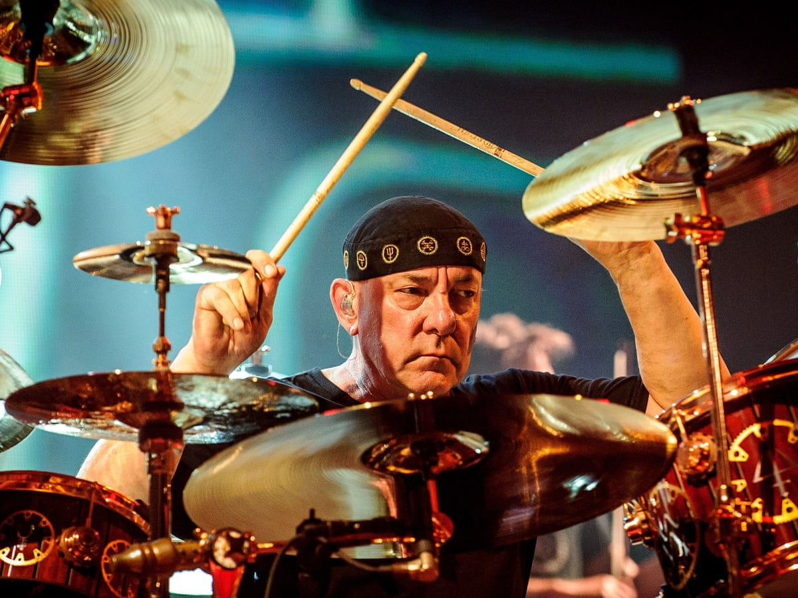
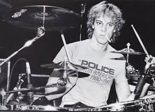
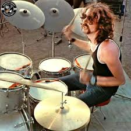
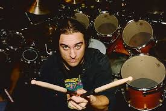

John Bonham
John Bonham fue el potente y preciso baterista de Led Zeppelin, ampliamente considerado uno de los más influyentes de la historia del rock. Conocido por su fuerza, groove impecable y técnica innovadora, redefinió el papel de la batería en la música pesada. Su estilo combinaba brutalidad y sutileza, y su legado sigue siendo una referencia obligada para bateristas de todos los géneros.
Ver aquíKeith Moon
Keith Moon fue el explosivo y carismático baterista de The Who, conocido por su estilo salvaje, innovador y poco convencional. Revolucionó la batería en el rock con su enfoque caótico pero musical, influenciando a generaciones de músicos. Más allá de su virtuosismo, fue famoso por su personalidad autodestructiva y actuaciones impredecibles, lo que lo convirtió en una leyenda tanto dentro como fuera del escenario.
Ver aquíJeff Porcaro
Jeff Porcaro fue uno de los bateristas de sesión más respetados de todos los tiempos, conocido por su trabajo con Toto y su groove legendario en canciones como “Rosanna”. Maestro del feel y la precisión, aportó su talento a cientos de grabaciones icónicas, dejando una huella imborrable en el pop, rock y R&B.
Ver aquíNeil Peart
Neil Peart fue el legendario baterista y letrista de Rush, conocido por su virtuosismo técnico, precisión milimétrica y composiciones líricas profundas. Revolucionó la batería en el rock progresivo con solos épicos, estructuras complejas y un enfoque casi orquestal del instrumento. Su influencia abarca generaciones de bateristas que lo consideran un referente absoluto de excelencia musical.
Ver aquíStewart Copeland
Stewart Copeland fue el dinámico baterista de The Police, reconocido por su estilo explosivo, preciso y con fuertes influencias del reggae, punk y la música árabe. Su enfoque rítmico único y su energía lo convirtieron en una figura clave del rock de finales de los 70 y 80.
Ver aquíNick Mason
Nick Mason es el baterista original de Pink Floyd, conocido por su estilo sobrio pero atmosférico, ideal para las largas composiciones progresivas de la banda. Su enfoque minimalista pero expresivo contribuyó al sonido psicodélico y espacial que definió a Pink Floyd.
Ver aquíGavin Harrison
Gavin Harrison es uno de los bateristas más respetados del rock progresivo contemporáneo, con un estilo técnico y expresivo, presencia clave en bandas como Porcupine Tree, King Crimson y The Pineapple Thief, y reconocido por sus colegas y publicaciones como Modern Drummer y Rolling Stone.
Ver aquíMike Portnoy
Mike Portnoy es un virtuoso baterista reconocido por ser cofundador de Dream Theater, donde destacó por su complejidad técnica, uso creativo de polirritmias y dominio del metal progresivo. Con un estilo enérgico y preciso, ha influido profundamente en la batería moderna, y su versatilidad lo ha llevado a colaborar con bandas como Liquid Tension Experiment, Transatlantic, Sons of Apollo y recientemente, su regreso a Dream Theater.
Ver aquíTim Alexander
Tim Alexander es mejor conocido por su trabajo con Primus, donde su estilo técnico, percusivo y lleno de cambios rítmicos ha sido fundamental para el sonido experimental de la banda. Es un baterista influyente dentro del rock alternativo y progresivo por su enfoque poco convencional.
Ver aquíMatt Cameron

Matt Cameron es el sólido y versátil baterista de Soundgarden y Pearl Jam, destacando por su potencia, dominio de compases complejos y capacidad para adaptarse al grunge, rock alternativo y progresivo. Su técnica ha sido clave en la evolución del rock de los 90 hasta hoy.
Ver aquí